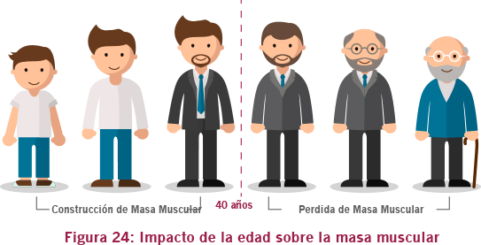

Envejecimiento y calidad de vida
Envejecimiento y calidad de vida.La calidad de vida asociada a este aumento de esperanza de vida está relacionada al control de las enfermedades crónicas degenerativas, como: la osteoartritis, la osteoporosis y las otras enfermedades crónicas no transmisibles (ECNTs) como las enfermedades cardiovasculares.
El proceso de envejecimiento afecta a todos los órganos y tejidos, pero a algunos más que a otros. El sistema muscular, por ejemplo, presenta una curva de aumento de masa muscular hasta los 40 años, iniciando después un continuo declive, tal como está ilustrado en la Figura 24:
